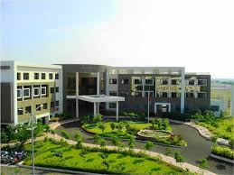

VIDYA PRATISHTHAN'S ENGLISH MEDIUM SCHOOL
About
Events
My school link

Vpems, Baramati established in the year 1993 and is affiliated to Center Board of Secondary Education, Delhi.
The school has completed its 25 Years of Educational Empowerment in the year 2017-18.
The school has classes from KG to Senior Secondary.
School follows child centered approach by providing various facilities and amenities to its students.
It ensure holistic development of a child. In school campus huge playground is available to play different games like Athletics, Football, Volleyball.
Well equipped Physics, Chemistry, Biology, Mathematics, Robotics and Language labs provide an ideal platform to the students to demonstrate their skills and abilities.
Automobile,IT & Retail provides entrepreneurial skills among the students. Scout Guide, Hobby clubs, NCC (Boys). Band training enhance the social and leadership skills among the students. Well equipped Computer labs, to enhance IT knowledge.
School library is a storehouse of knowledge. A well stocked library has books relevant to the curriculum as well as for general reading.
Modern trends in teaching learning process are effectively implemented in the school.
ICR’s make teaching learning process interesting, enjoyable & stress free.
School counselor arranged counseling sessions for students.
A well equipped auditorium provides opportunity to the students to showcase their inherent talent.
Music & drawing room develop aesthetic sense of the students.
School provides RO purified drinking water & good sanitation facility.
Disaster Management, Rain Water Harvesting, Science center, Geometry park, Boys & Girls rest room & easy access to Govt.
Hospital ensure safety & security of the students.
A school creates conducive environment for teaching learning process.
Well qualified & trained teaching staff is a hallmark of Vpems.